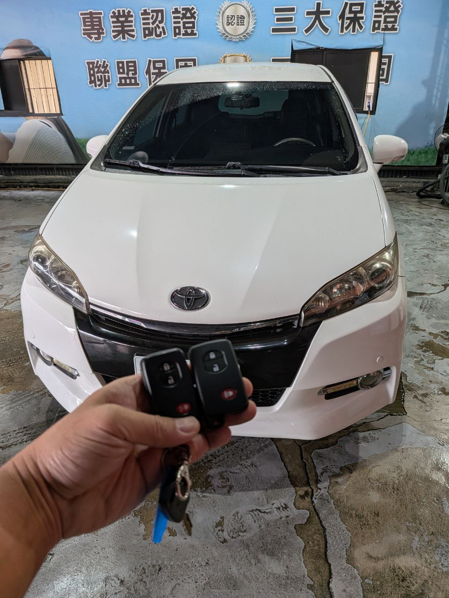

現場實拍：南投草屯地區 Toyota RAV4 智慧感應鑰匙匹配完成
在地深耕：為草屯車主提供即時支援
在南投草屯，一輛 Toyota RAV4 車主因意外遺失了唯一的智慧鑰匙。考慮到回官方通路需要漫長的待料期與昂貴的拖吊費用，車主選擇了極致核心的「專業現場匹配服務」。
技術核心：防盜數據同步
Toyota 的智慧感應系統需要與 ID 代碼進行精準對齊。我們透過「專業級高階器材」，在不變動原車防盜架構的前提下，直接於車內完成新密碼的重寫與同步。
- • 免除拖吊： 現場直接解除排檔鎖，原地恢復動力。
- • 完整功能： 包含 Smart Entry 感應開門與按鈕啟動。
- • 安全保障： 完工後自動作廢舊有遺失鑰匙，維護車輛安全。